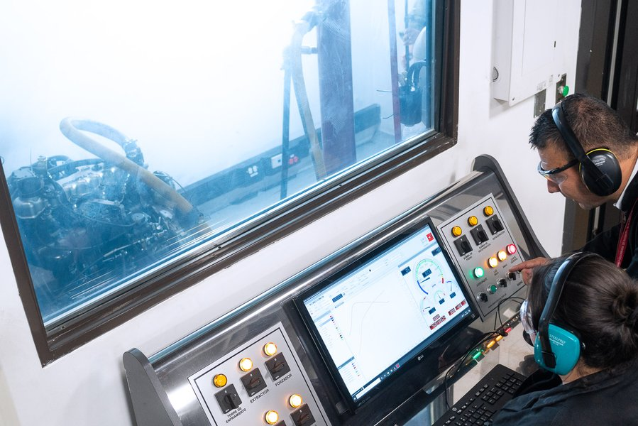
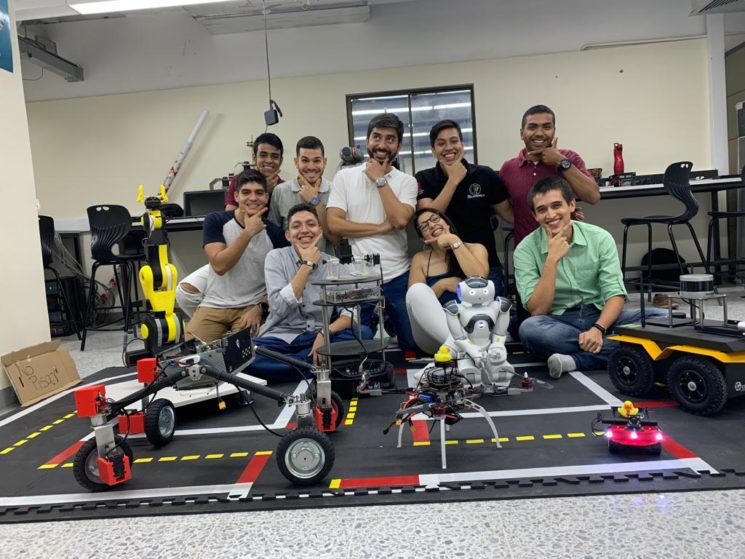

El semillero INNOVATECH SYSTEMS surge como una iniciativa académica orientada a fortalecer las
competencias
investigativas de los estudiantes de Ingeniería de Sistemas. Nace ante la necesidad de integrar la
teoría
con la práctica mediante el desarrollo de proyectos tecnológicos que respondan a problemáticas reales
del
entorno. Desde su creación, el semillero ha promovido el trabajo colaborativo, la innovación y la
participación en
espacios académicos, incluyendo eventos organizados por Red Colombiana de Semilleros de Investigación.
Mision
Formar estudiantes investigadores en el área de Ingeniería de Sistemas mediante el desarrollo de
proyectos tecnológicos innovadores, fomentando el pensamiento crítico, la creatividad y la solución de
problemas reales.
Vision
Ser un
semillero reconocido a nivel institucional y nacional por la calidad de sus proyectos, su participación
en eventos académicos y su aporte a la innovación tecnológica.
Objetivos
general
Desarrollar competencias investigativas y técnicas en los estudiantes a través de la creación de
proyectos tecnológicos.
especificos
Fomentar el trabajo en equipo y la colaboración entre los miembros del semillero.
Promover la participación en eventos académicos y de investigación a nivel institucional y
nacional.
Desarrollar proyectos tecnológicos que respondan a problemáticas reales del entorno.
Fortalecer las habilidades de comunicación científica y técnica de los estudiantes.
Lineas de investigacion

Seguridad informatica
Protección de datos y buenas prácticas en sistemas tecnológicos.

Tecnologias educativas
Desarrollo de plataformas digitales para el aprendizaje.
Desarrollo de Software
Creación de aplicaciones web, móviles y sistemas de información
Ciencia de Datos
Análisis de datos, inteligencia artificial básica y toma de decisiones.